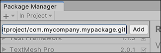

Package Manager 可以从远程服务器上的 Git 代码仓库加载包。
有关 Unity Package Manager 与 Git URL 结合使用的更多信息，请参阅项目清单中有关使用 Git URL 的文档。
要从 Git URL 加载包，请执行以下操作：
1.在状态栏中单击添加 按钮。
2.此时将显示用于添加包的选项。

3.从添加菜单中选择 Add package from git URL。此时将显示一个文本框和 Add 按钮。
4.在文本框中输入有效的 Git URL，然后单击 Add。

有关 Unity 支持的协议的更多信息，请参阅 Git URL。
如果 Unity 能够成功安装包，则该包现在将显示在包列表中，并带有 git 标签。
如果 Unity 无法安装包，则 Unity 控制台将显示一条错误消息。有关更多信息，请检查是否可以在下面的错误消息列表中找到该消息。
如果您指定了不存在的位置，则在 Unity 控制台中会出现以下类似的消息：
Cannot perform upm operation: Unable to add package [https://mycompany.github.com/gitproject/com.mycompany.mypackage.git]:
Error when executing git command. fatal: repository 'https://mycompany.github.com/gitproject/com.mycompany.mypackage.git/' not found
[NotFound]
UnityEditor.EditorApplication:Internal_CallUpdateFunctions() (at /Users/builduser/buildslave/unity/build/Editor/Mono/EditorApplication.cs:310)
请检查您的拼写。为了确保使用正确的 URL，请访问代码仓库的页面，然后通过 Clone 按钮复制 URL：
单击 GitHub (A) 或 GitLab (B) 上 URL 右侧的按钮以将 URL 复制到剪贴板。
如果您尝试从需要身份验证的专用代码仓库安装包，则在 Unity 控制台中会出现以下类似的消息：
Cannot perform upm operation: Unable to add package [https://mycompany.github.com/gitproject/com.mycompany.mypackage.git]:
Error when executing git command. fatal: could not read Username for 'https://mycompany.github.com': terminal prompts disabled
[NotFound]
UnityEditor.EditorApplication:Internal_CallUpdateFunctions() (at /Users/builduser/buildslave/unity/build/Editor/Mono/EditorApplication.cs:310)
在克隆或提取 Git 代码仓库时，用于身份验证的两种最常见协议是 HTTP(S) 和 SSH（即一对公有和私有 SSH 密钥）：
如果使用 HTTP(S)，每次登录 GitHub 或 GitLab 时，都需要在终端或对话框中输入用户名和密码。
如果使用 SSH，您可以将公有 SSH 密钥添加到 GitHub 或 GitLab，之后无需输入用户名和密码即可访问代码仓库。
但是，如果您设置了一个口令短语来保护 SSH 密钥的安全，则仍然需要在终端或对话框中输入该口令短语以便授权密钥。
有关 Git 使用的各种协议之间的差异概述，请参阅有关使用协议的 Git 文档。
Package Manager 没有提供用来输入 HTTP 的用户名和密码或者输入口令短语来解锁 SSH 密钥的交互式终端或对话框。要绕过这一点，请使用下列其中一种变通方法：